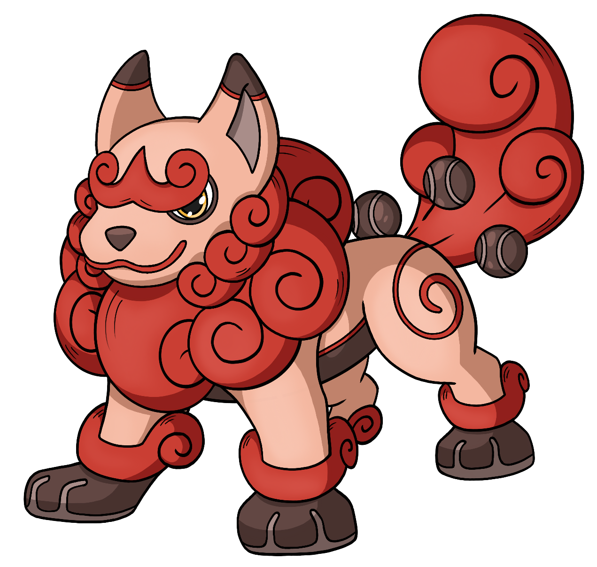

Underdog
Underdog is the ability Yuuki has gained on the evolution of Kio from Vemmon to Snatchmon in game. It works via taking the amount of injuries that Yuuki is currently holding and in turn providing her and Kio a boost of strength while in a fight. However, it is not without consequences or dark intent. Just what that means for Yuuki and Kio however has yet to be learned.
Kinumon
Kinumon is the true rookie level of Kio before having been infected. Although he does not remember much of this past life from then, he is making much progress thanks to Yuuki's help to learn more and more on his past!

Chasing Stars
When I had joined Odyssey of the Stars, it was the second ever DnD game I had joined without being in real life friends with the members of the table; and frankly it was rather nerve wracking to join the game for the first time. It in of itself has had some up and downs but it was something that by name alone I was intruiged in. The Gamemaster; KristenKreme or otherwise known as Kristen, was the one who had invited me in. And more importantly learned about something rather important I was working through at the time, grief from losing my best friend and childhood dog Charlie. She had heard me talk about how I had missed her in the past and how the games name made me think of a saying my family and I had at her passing 'We hope you chase the stars.' And at some point, Kristen had asked me if she could honor Charlie in this game. Which ended up creating the team name for our group, The StarChasers, and sparked Kinumon's creation and Vemmon's ultimate goal of reaching and chasing the stars. So in the end, this game has been one of the most impactful pieces of storytelling that I have adored and loved beyond all life. So, if you are reading this (which you most likely will be as I know I'm going to share this with you) thank you Kristen. For letting me be a part of Odyssey of the Stars. And thank you, for letting Charlie shine on along side the rest of us in spirit. It will forever and always mean the world to me.